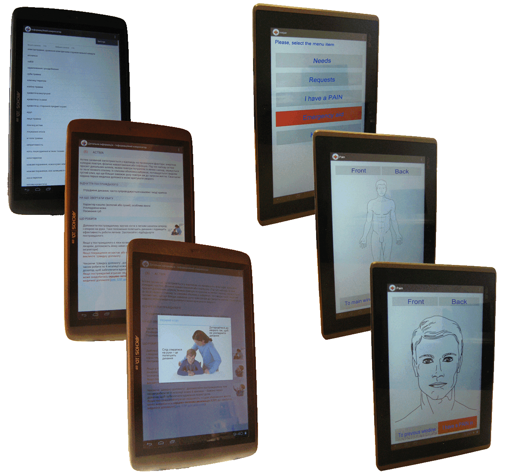

Information Communicator for Medicine

Mutual understanding and communication between doctors and patients is a very important problem as in
medicine, so in telemedicine. Ability of correct communication and mutual understanding during the
disease or separate stage of disease helps to diagnose, prognose a clinical behaviour, and accelerate
the recovery.
Communication problems between a doctor and a patient influence correctness of the diagnoses and
quality of a doctor aid, and complicate the medical treatment.
It is proposed to apply special hardware-software means, particularly information communicators to
simplify the communication of doctors with patients (particularly with voice limitation) and increase
treatment efficiency beginning from the first contact.
Special application-dependent software consists of two subsystems. The first subsystem is used for the
first contact of a doctor and a patient. The second subsystem is used for alternative communication of
doctors with patient lost temporarily or permanently possibility of speaking.
Information communicators are used for the following purposes:
- In medicine: for supporting first contact of doctors with patients (with voice limitation), and getting information about patient state, for example, during the preliminary examination of patients. Particularly it is very important for family doctors because they are the firsts who examine patients with different diseases. Sometimes family doctors have no enough knowledge and experience to diagnose.
- To make emergency medical aid for patients with voice limitation: in this case the information communicators help patients to communicate with doctors.
The other aim of information communicator is to support alternative communication with voice and motion
limited patients. The idea of alternative communication is rather simple. Voice limited patient needs
communication with surroundings in any way. The process of establishing relations with additional means
helps patient with voice limitation to express his needs and wishes.
Main developer:
Volodymyr ROMANOV